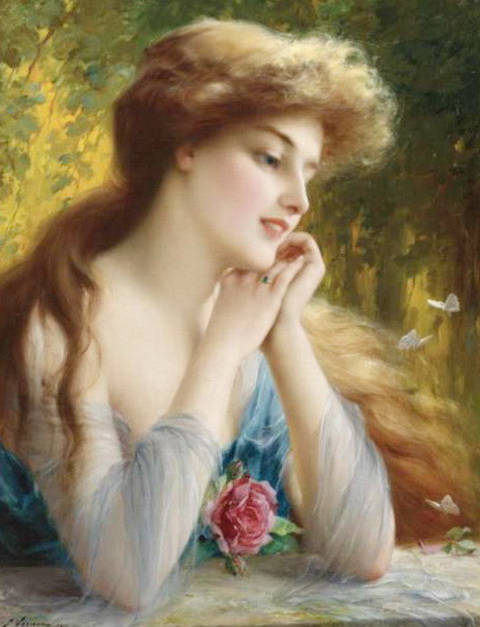

Dialogue 1 :
Émilie Sicogne : en s'adressant à Éric.
Je ne me sens pas très bien je reviens dans quelques minutes.
Émilie s'en va du coté des toilettes...
Édouard Molinski :
Elle a l'air belle mais on dirait qu'elle en veut à notre argent ! Méfies-toi de ce succube fils !
Éric Molinski :
Mais père la terre entière n'en veut pas à ton argent ! Il faut arrêter de se méfier de tout, des gens bien existent...
Édouard Molinski :
Tu ne connais encore rien à la vie tu n'as que vingt ans, les vicieux et les arnaqueurs existent il faut se méfier de tous comme de la peste....
Éric Molinski :
....
Après de longues minutes Émilie revient.
Émilie Sicogne :
Me revoilà, de quoi avez-vous parlez pendant mon absence ?
Éric Molinski :
Rien ! Vraiment rien, oh ! regarde ces coquillages ils sont très beaux tu devrais en prendre en souvenir...
Émilie Sicogne : en prenant des coquillages dans son sac.
Effectivement mon chéri !
Dialogue 2 :
Émilie Sicogne :
Merci de m’accueillir en cette journée fort radieuse.
Sylvie Legendre Molinski :
C'est un vrai plaisir, il est rare que Eric nous fasse rencontrer quelqu'un... Il doit beaucoup tenir à vous...
Éric Molinski
Maman je t'en prie...
Sylvie Legendre Molinski : esquisse un petit sourire.
Alors dites-moi jeune fille, Qui êtes-vous ? d'où venez-vous ?
Émilie Sicogne :
Alors je me prénomme Émilie Sicogne, mes parents sont assez stricts aussi donc je comprend bien votre père, malheureusement j'ai dû m'en séparer, a cause d'éléments imprévus... Je travaille actuellement dans une taverne, ce qui me permet de survivre difficilement, je vends aussi des tableaux que je peins moi-même...
J'utilise une peinture révolutionnaire à base de plante naturelle... Mais je n'ai pas beaucoup de client...
Sylvie Legendre Molinski :
Je vois, la vie d'artiste ça ne doit pas rapporter beaucoup...
Émilie Sicogne :
Il est vrai que l'argent vient a manquer parfois, mais on s'y habitue je pense... Mais j'ai confiance à Éric, si l'on s'est rencontrés ce n'est pas le fruit du hasard... C'est le destin !